Brunchen, en daarna nog even shoppen.
Een cappuccino in een kopje met rozen, Den Sympathiek of een huisgemaakte Brusselse wafel. En tussen de tafels hangen handtassen, riemen, juwelen en kledij die je zo mee naar huis neemt.
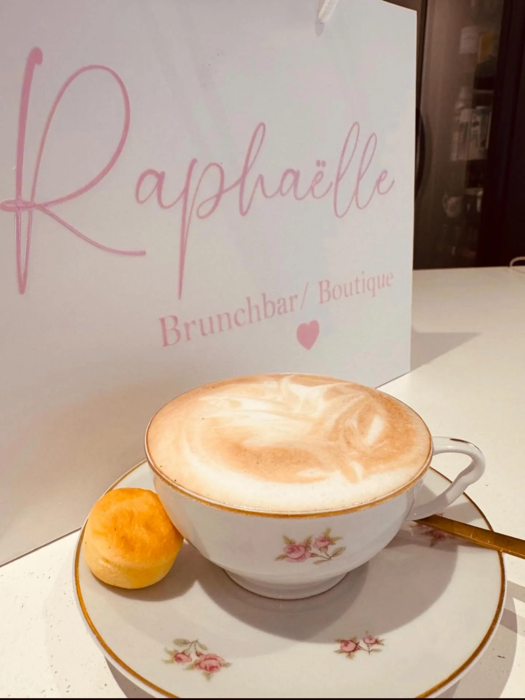
Mooi geserveerd, op bloemetjesporselein.
Toasts, croques, wraps, een yoghurtbowl of iets zoets. Dit kwam de voorbije maanden op tafel.
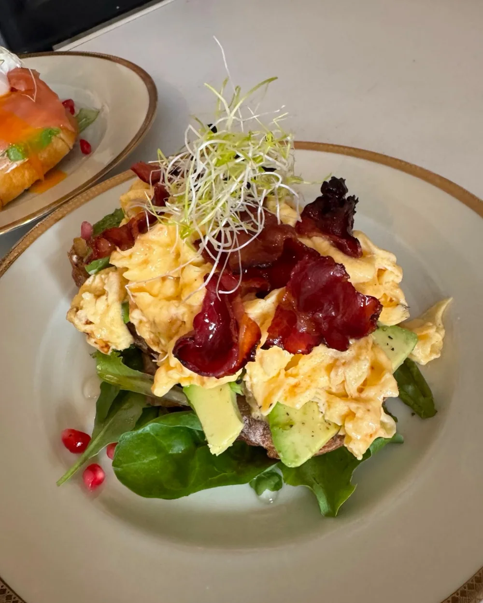
Den Sympathiek
Avocado, roerei op smaak, krokant gebakken uienringen en bacon. Het broodje waar je voor terugkomt, met een naam die je niet meer vergeet.
"Het smaakte allemaal verrukkelijk... en was met zó veel liefde en aandacht gemaakt. Mooi geserveerd, oogstrelend."J. Willems, op Google
Ook op de kaart
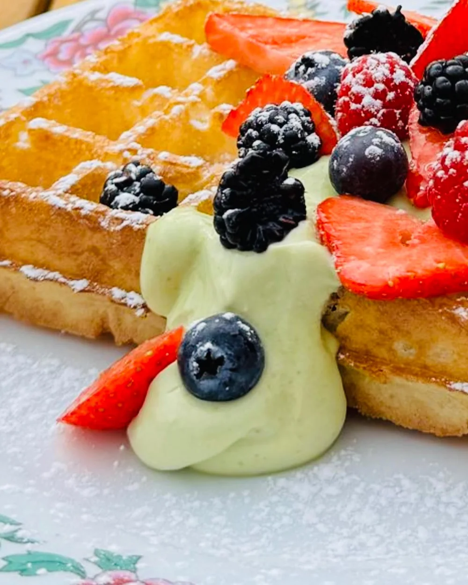
Brusselse wafelHuisgemaakt, met matchacrème en vers fruit.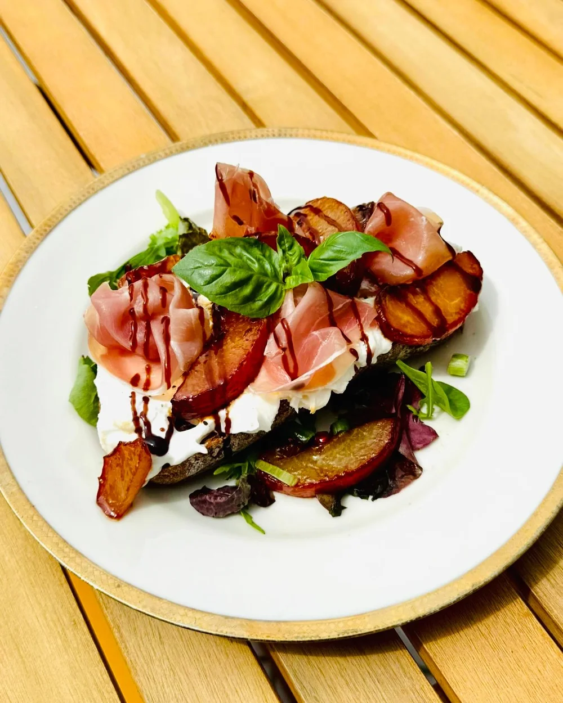
Toast burrata en perzikMet prosciutto di Parma en verse basilicum.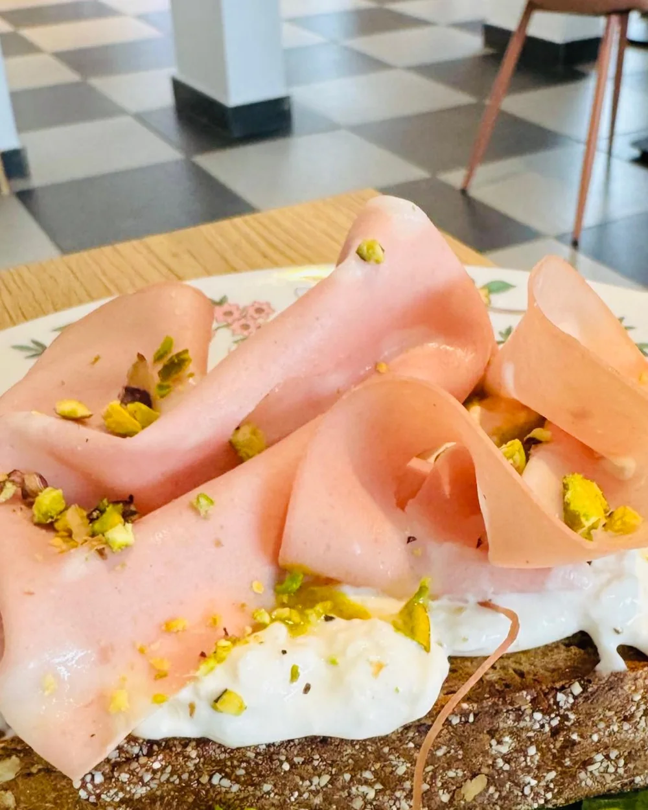
Burrata, mortadella, pistacheOp een stevige snee bruin brood.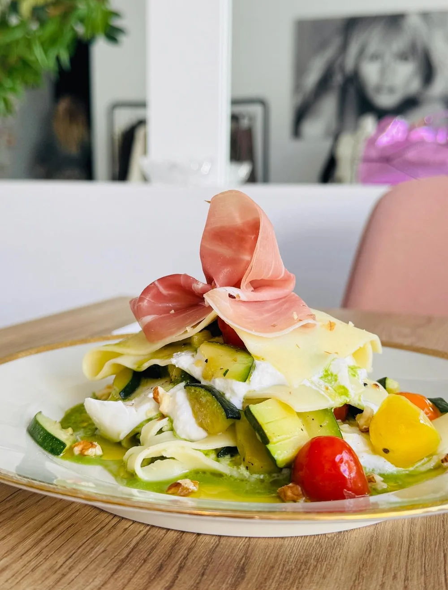
Open lasagnaRicotta, groenten en parma.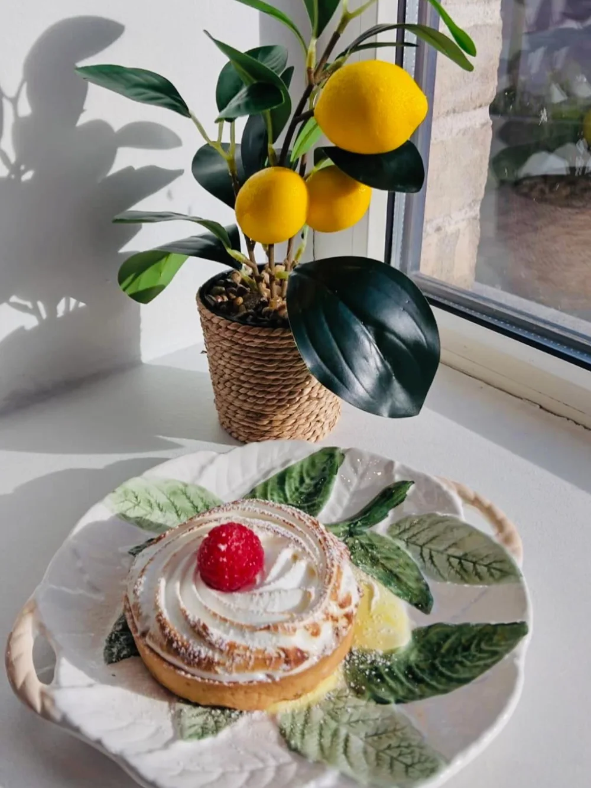
LemoncakeMet een toefje meringue erop.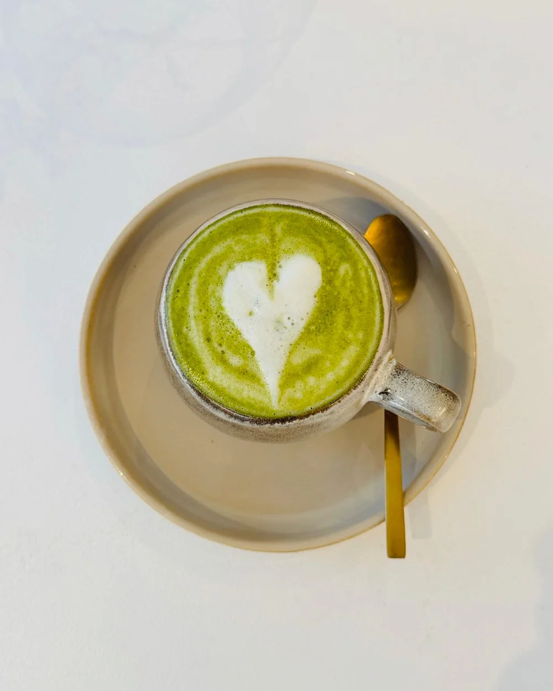
Matcha latteMet een hartje in het schuim.
De kaart wisselt mee. Wat er deze week op staat, zie je op onze Instagram.
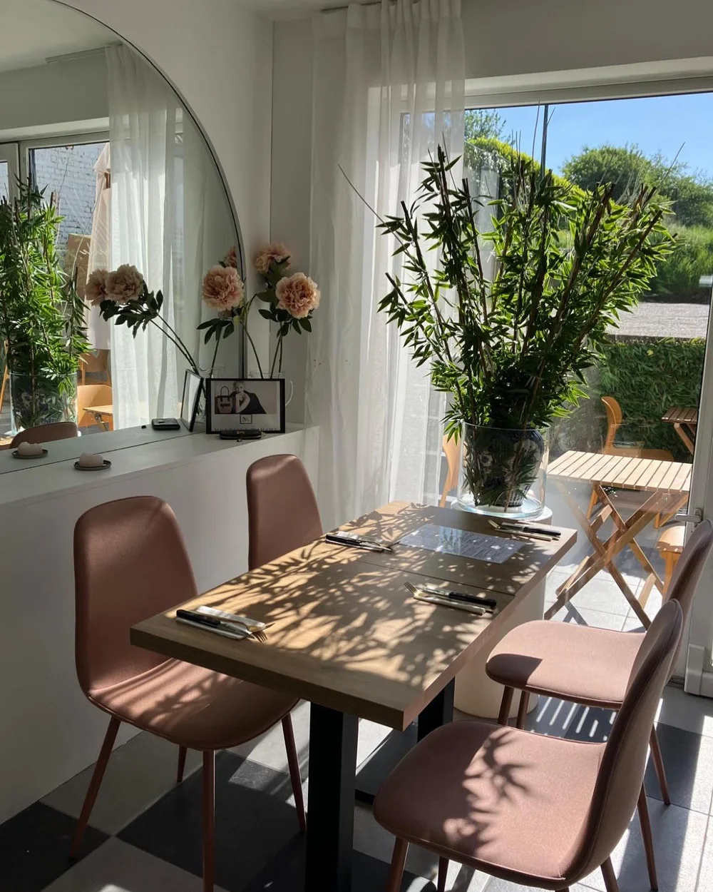
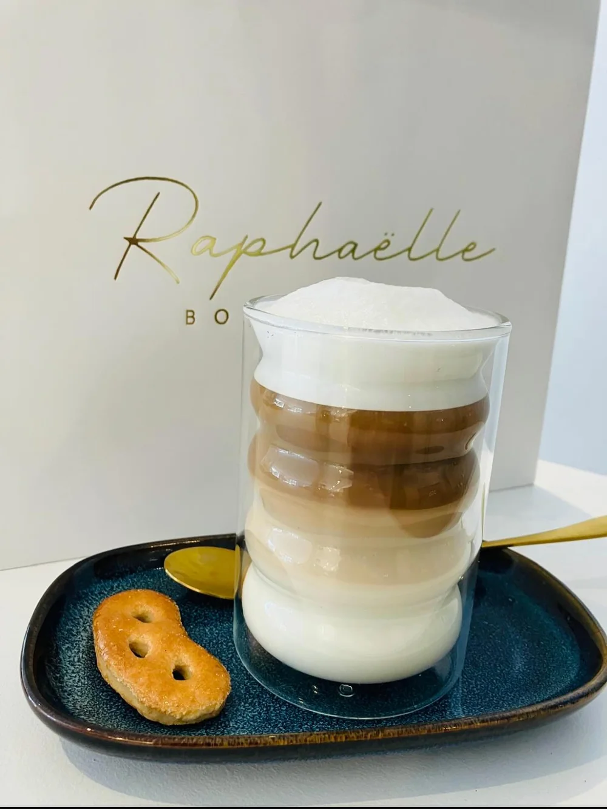
Tussen de tafels hangt onze collectie.
Bij Raphaëlle hoef je niet te kiezen tussen brunchen en shoppen. Terwijl je koffie nog warm is, kijk je rustig rond. Wat je mooi vindt, neem je gewoon mee.
Wat onze gasten erover zeggen.
"Wij gingen hier brunchen, zeer vriendelijke bediening die enorm behulpzaam en verwelkomend is. We namen beide een toast en een yoghurtbowl die heel erg mooi geserveerd werden."
Céleste De Block op Google★★★★★"Zeer lekkere en prachtige ontbijtjes! Fijne sfeer en aangenaam om te zitten. Zeker en vast een aanrader!"Regine Maho op Google
★★★★★"Gezellig interieur! Super lekker eten en vriendelijke bediening!! Wij komen nog terug."e h op Google
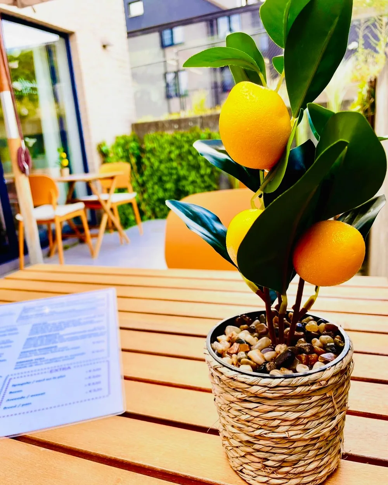
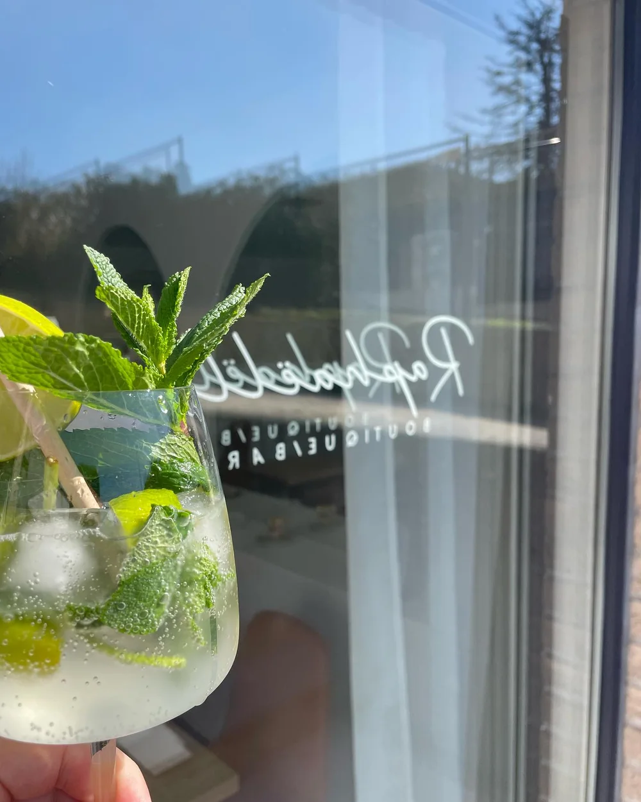
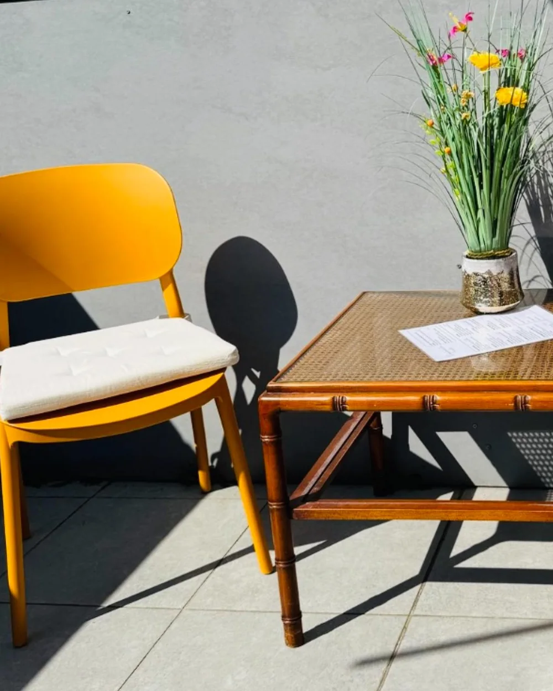
Tot op de Brusselsesteenweg.
- Dinsdag tot zaterdag
- 10u tot 17u
- Zondag
- 10u tot 15u
- Maandag
- Gesloten
Brusselsesteenweg 62B bus 1, 1850 GrimbergenEr is voldoende parkeerplaats.
Tot snel, Delphine en Mickael